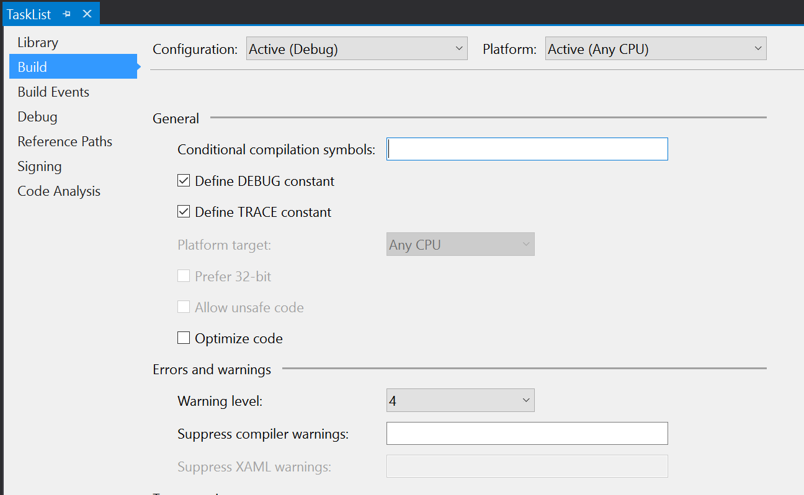

The Development Environment¶
In these last two chapters, I want to go over some of the complexities of developing mobile applications when there is a cloud-enabled backend. Working with cloud services presents its own special challenges, especially when you use the features of the provider. In the case of Azure App Service, this means that dealing with App Service Authentication and App Service Push requires some special configuration.
Working with Azure Mobile Apps Locally¶
In general, you can use Azure Mobile Apps locally by running inside a local IIS container. If you are using Visual Studio, then this is set up for you. However, you will need to handle the SQL database connection. You have two choices for this. Firstly, you can use a SQL Azure instance and just point your server to that instance. Secondly, you can install SQL Express and use that instance instead. Both are perfectly viable options. I like to use SQL Express in early development, then switch over to a SQL Azure instance as I get closer to deployment. Switching over when you are close to deployment enables to you detect any problems in upgrades or the use of encrypted channels.
Configuring SQL Express for Local Development¶
Start by downloading and installing the Microsoft SQL Server Express edition. Azure Mobile Apps will work with just about any recent SQL Server Express edition. I personally recommend the SQL Server 2016 SP1 Express edition.
The process by which SQL Server Express is installed varies by edition and version, so keep these tips in mind.
- Always elect the custom installation option.
- You need the Database Engine and the Management Tools (possibly via separate download)
- You do not need reporting or integration services.
- Use Mixed mode for authentication and set an sa password.
- If possible, place the data directories on a different disk.
Once you have installed the database engine and management tools, you will need to create a user that has permissions to create databases:
- Run the SQL Server Management Studio and connect to your local SQL Express instance.
- Ensure the SQL Server and Windows Authentication mode is checked in the Properties > Security page.
- Expand Security > Logins in the Object Explorer.
- Right-click the Logins node and select New login.... a. Enter a unique login name b. Select SQL Server authentication. c. Enter a password, then enter the same password in Confirm password. d. Click OK.
- Right-click on your new login and select Properties. a. Click Server Roles under Select a page. b. Check the box next to the dbcreator role. c. Click OK.
- Close the SQL Server Management Studio.
Ensure you record the username and password you selected. You may need to assign additional server roles or permissions depending on your specific database requirements. Your connection string will need to look like this:
Server=127.0.0.1; Database=mytestdatabase; User Id=azuremobile; Password=T3stPa55word;
Replace the user ID and password with the user ID and password you just created. The database will be created
for you, so ensure it is rememberable. To set the connection string, you will need to edit the Web.config
file. At around line 12, you will see the default connection string. Simply replace it with your SQL Express
connection string:
<connectionStrings>
<add name="MS_TableConnectionString"
connectionString="Data Server=127.0.0.1; Database=mytestdatabase; User Id=azuremobile; Password=T3stPa55word;"
providerName="System.Data.SqlClient" />
</connectionStrings>
You should now be able to press F5 on your server and run it locally.
Configuring SQL Azure for Local Development¶
I have already discussed creating a SQL Azure instance. By default, however, the SQL Azure instance can only be used by other Azure resources as a security measure. There is a firewall that limits connectivity from the Internet to your database. To run your server locally while connecting to the SQL Azure instance, you need to do two things:
- Open the firewall for connections from your IP address.
- Update the connection string in your servers
Web.configfile.
From your development system (the workstation that you will be using to run the service locally), open a browser and log into the Azure portal. You will note that there are two resources for your SQL database - a server and a database. Open the resource for the SQL server, then:
- Click the Firewall menu option.
- Click + Add client IP.
- Click Save, then OK.
If you are using a different workstation to run the service, then you can enter an explicit IP address. To get the connection strings:
- From the SQL Server Overview page, click the SQL database.
- From the SQL database Overview page, click Show database connection strings.
- Copy the ADO.NET (SQL authentication) connection string.
This will need to be copied into the Web.config in the same way as the SQL Express version (above).
You will need to replace the {your_username} and {your_password} strings with the username and
password of your SQL server. If you can't remember them, look in your App Service - they are available
in the configured connection string under Application Settings.
Once this done, you will be able to press F5 on your server and run it locally.
Handling Cloud Services while Developing Locally¶
At this point, you have done plenty of test runs in the cloud and you have also run both your client and the server locally. However,t here are certain problems when you are running the server locally but using the Azure App Service resources for pieces of your application. The two main resources that mobile developers use in Azure App Service are authentication and registration for push notifications. The basics for these facilities were covered in Chapter 2 and Chapter 5 respectively. There are some additional code requirements when you want to run your main server locally for debugging.
Handling Authentication¶
When dealing with authentication, you want the majority of your requests to go to your main server, but you want your authentication requests to go to the Azure App Service you are using for development. To set this scenario up, you need to configure your mobile client to connect to your Azure App Service and receive a token, then continue using the local server. You also need to configure your local server so that it can decode the token.
The Azure Mobile Apps Client SDK has a setting called AlternateLoginUrl. You can specify the URL of the
Azure App Server in this if you are operating against a local server. For example:
namespace TaskList.Helpers
{
public static class Locations
{
//#if DEBUG
// public static readonly string AppServiceUrl = "http://localhost:17568/";
// public static readonly string AlternateLoginHost = "https://the-book.azurewebsites.net";
//#else
public static readonly string AppServiceUrl = "https://the-book.azurewebsites.net";
public static readonly string AlternateLoginHost = null;
//#endif
}
}
In this snippet (from the Chapter 2 test project), I get the AlternateLoginHost set only if I define the
DEBUG setting in my build properties. When I create the MobileServiceClient, I can use this logic to set
the AlternateLoginUrl:
public AzureCloudService()
{
client = new MobileServiceClient(Locations.AppServiceUrl, new AuthenticationDelegatingHandler());
if (Locations.AlternateLoginHost != null)
client.AlternateLoginHost = new Uri(Locations.AlternateLoginHost);
}
To set the DEBUG setting, I can right-click on the project and select Properties, then select Build in the resulting window. The Define DEBUG constant is available in this window:

Since my location is only set when the DEBUG constant is set, this allows me to switch between the two modes.
There are other ways to switch between the two modes if you also want to support debug mode against an Azure
App Service based server. One of my favorites is to have an application setting that enabled "local mode".
When I check that, I can specify a local URL. At that point, the AppServerUrl is set to what I enter and
the AlternateLoginUrl becomes the original value of the AppServiceUrl - effectively swapping to the local
server but preserving the auth configuration.
Now that I've enabled the mobile client for local development, I also need to enable the local server. The
local server should have the following code already within the App_Start\Startup.MobileApps.cs file:
MobileAppSettingsDictionary settings = config.GetMobileAppSettingsProvider().GetMobileAppSettings();
if (string.IsNullOrEmpty(settings.HostName))
{
app.UseAppServiceAuthentication(new AppServiceAuthenticationOptions
{
// This middleware is intended to be used locally for debugging. By default, HostName will
// only have a value when running in an App Service application.
SigningKey = ConfigurationManager.AppSettings["SigningKey"],
ValidAudiences = new[] { ConfigurationManager.AppSettings["ValidAudience"] },
ValidIssuers = new[] { ConfigurationManager.AppSettings["ValidIssuer"] },
TokenHandler = config.GetAppServiceTokenHandler()
});
}
This code says "if the service is not running within Azure App Service, then validate the authentication tokens using the following information". We need the information provided from the Azure App Service that is producing the tokens. To obtain this information, we need to peek into Kudu - a backend service for examining the information that Azure App Service uses to run the service.
- Log on to the Azure portal.
- Select your Azure App Service.
- In the left-hand menu for the server, type Advanced Tools in the search box.
- Click Advanced Tools, then click Go.
- In the new window, click Environment, then Environment variables.
- Scroll down (or use search) to find WEBSITE_AUTH_SIGNING_KEY.
Your required values are:
- SigningKey is the WEBSITE_AUTH_SIGNING_KEY above.
- ValidAudience and ValidIssuer are both of the form
https://{your-sitename}/.
Once you have these two values, you can insert them into the Web.config file for local development:
<appSettings>
<add key="PreserveLoginUrl" value="true" />
<add key="MS_SigningKey" value="Overridden by portal settings" />
<add key="EMA_RuntimeUrl" value="Overridden by portal settings" />
<add key="MS_NotificationHubName" value="Overridden by portal settings" />
<add key="SigningKey" value="4CFD0AA0148455E90F076F58D401377DA9D2443CC5C2E64E36C2D5FC96A71E9C" />
<add key="ValidAudience" value="https://the-book.azurewebsites.net/" />
<add key="ValidIssuer" value="https://the-book.azurewebsites.net/" />
</appSettings>
These values will be overridden by the portal settings when operating within the Azure App Service. You can now run the local server and the mobile client locally while authenticating via the Azure-based App Service.
Handling Push Notifications¶
In chapter 5, I espoused using InvokeApiAsync<>() to register for push notifications, mostly because it
enabled me to register with a Notification Hubs Installation object rather than just my registration ID.
This enabled me, for example, to register with tags for better audience selection. If you look at how the
InvokeApiAsync method is implemented:
private async Task<string> InternalInvokeApiAsync(string apiName, string content, HttpMethod method, IDictionary<string, string> parameters, MobileServiceFeatures features, CancellationToken cancellationToken = default(CancellationToken))
{
method = method ?? defaultHttpMethod;
if (parameters != null && parameters.Count > 0)
{
features |= MobileServiceFeatures.AdditionalQueryParameters;
}
MobileServiceHttpResponse response = await this.HttpClient.RequestAsync(method, CreateAPIUriString(apiName, parameters), this.CurrentUser, content, false, features: features, cancellationToken: cancellationToken);
return response.Content;
}
You will note it's just a HTTP request with some serialization and deserialization around it. I can
replicate this by creatign a new HttpClient object and publishing the same serialized content. I'm
not concerned with the actual response, so this is fairly easy. The adjusted code might look something
like this:
try
{
var registrationId = GcmClient.GetRegistrationId(RootView);
var client = new HttpClient(new Uri(Locations.AlternateLoginHost ?? Locations.AppServiceUrl));
var installation = new DeviceInstallation
{
InstallationId = client.InstallationId,
Platform = "gcm",
PushChannel = registrationId
};
installation.Tags.Add("topic:Sports");
installation.Templates.Add("genericTemplate", new PustTemplate
{
Body = "{\"data\":{\"message\":\"$(messageParam)\"}}"
});
// Register with NH
var json = JsonConvert.SerializeObject(installation).ToString();
var response = await client.PutAsync(
$"/push/installations/{client.InstallationId}",
new StringContent(json, Encoding.UTF8, "application/json"));
if (!response.IsSuccessStatusCode)
{
throw new MobileServiceInvalidOperationException("Invalid Response", null, response);
}
}
catch (Exception ex)
{
Log.Error("DroidPlatformProvider", $"Could not register with NH: {ex.Message}");
}
This uses a new HttpClient that is created for the purposes of registering with Notification Hubs. I have to handle all the serialization of the objects myself because I'm not operating in the confines of the Azure Mobile Apps SDK any more. The code differences here are minimal.
Another way to deal with this is to stub the /push/installations endpoint in your server during local
debugging with a standard WebAPI controller. This allows you to verify that the data being sent to the
server is correct (i.e. your client code is correct) without actually registering for push notifications.
You will not receive push notifications until you publish your service to Azure App Service and properly
configure the App Service Push feature. Your controller will be over-ridden by App Service Push when you
do publish to Azure App Service.
Debugging your Cloud Mobile Backend¶
When you are running the server locally, you can easily set breakpoints, view the state of the service, and emit log events that are captured in the Output window of your Visual Studio IDE. When you are running the server within Azure App Service, you can still do all these things. However, they are slower because you are accessing the service over the Internet rather than on your local machine. They also take a little bit more to set up.
Diagnostic Logging¶
Diagnostic logging is my preferred way of isolating problems. This is mostly because you can see historical context - what happened in what order - and you don't need to have a debugger attached to the process to use it. This means that diagnostic logging should be provided even after your service has move to production. However, diagnostic logging does require you to decide what information is important and to emit events associated with that information.
You can configure diagnostic logging within the Azure portal or within Visual Studio. To configure diagnostic logging in the Azure portal:
- Open the Azure portal and select your Azure App Service.
- In the left-hand menu search box, type Diagnostic logs.
- Click the Diagnostic Logs menu item.
- In the Diagnostic logs page, turn on the following items: a. Application Logging (Filesystem) (also set the Level to Verbose) b. Web server logging (select File System) c. Detailed error messages d. Failed request tracing
- Click Save
You can view the stream of logs from the Azure portal by selecting your Azure App Service and then using the Log Stream menu option in the left-hand menu. The logs are also available as text files via Kudu (Advanced Tools in the left-hand menu) or via FTP (the location and login ID are provided on the Diagnostic Logs screen).
To configure diagnostic logging within Visual Studio:
- Use View > Server Explorer to show the Server Explorer.
- Expand the Azure node, then App Service, then your resource group.
- Right-click your Azure App Service and select View Settings.
- In the Configuration panel, select the following: a. Web Server Logging = On b. Detailed Error Messages = On c. Failed Request Tracing = On d. Application Logging (File System) = Verbose
- Click Save.
You can view the stream of logs from Visual Studio by right-clicking your Azure App Service within the Server Explorer, then selecting View Streaming Logs. The logs appear in a section of the Output window called Microsoft Azure Logs - {your-site}. The first message received will indicate that visual Studio is connected to the log-streaming service.
Using the Visual Studio Debugger¶
Even though diagnostic logging will probably be your go-to troubleshooting tool in the long run, there are times when you need to set a breakpoint and step through the code during development. In my experience, this happens quite a lot, especially when there are differences between how the server reacts when running locally vs. when running within Azure.
Before you attach a debugger to an App Service running within Azure, you need to turn on remote debugging. This should NOT be done on a production service. You can turn on remote debugging within Visual Studio or in the Azure portal. For Visual Studio:
- Use View > Server Explorer to show the Server Explorer.
- Expand the Azure node, then App Service, then your resource group.
- Right-click your Azure App Service and select View Settings.
- In the Configuration panel, set Remote Debugging = On.
- Click Save.
In the Azure portal, the remote debugging option is set through the Application settings menu option. You will need to set the Remote Visual Studio version to be the same version as your copy of Visual Studio.
To debug your service, deploy a Debug version of your server. Then right-click the App Service within the Server Explorer and select Attach Debugger. You can now set breakpoints and step through the code.
Server Hangups
Using the debugger is also a great way to ensure that your mobile client handles slow links and service
interruptions gracefully. As developers, we tend to have pretty good cellular coverage and fast connections
to the Internet, but your users probably won't be in that situation. Set a breakpoint on the GetAll()
method of your controller, trigger a synchronization, and then let the service just sit there at the
breakpoint. Your mobile client will time out and you can see the effect of a bad connection.
One of the other significant things you can do with your server when remote debugging is turned on is to profile the server. Profiling is a good way of determining performance bottlenecks in your code. Azure App Service supports remote profiling within Visual Studio for the server component. Use the Xamarin Profiler to profile your mobile application.